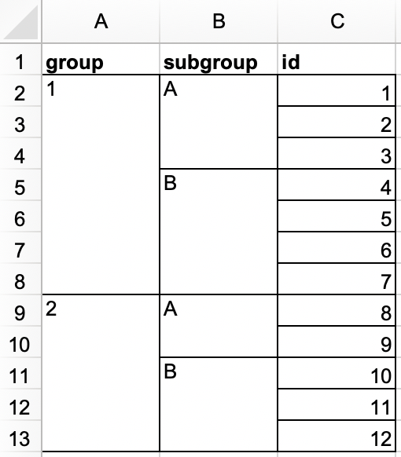

20 Spreadsheets
20.1 Introduction
In Chapter 7 you learned about importing data from plain text files like .csv and .tsv. Now it’s time to learn how to get data out of a spreadsheet, either an Excel spreadsheet or a Google Sheet. This will build on much of what you’ve learned in Chapter 7, but we will also discuss additional considerations and complexities when working with data from spreadsheets.
在 Chapter 7 中，你学习了如何从 .csv 和 .tsv 等纯文本文件导入数据。现在是时候学习如何从电子表格中获取数据了，无论是 Excel 电子表格还是 Google Sheet。本节将建立在你在 Chapter 7 中学到的大部分知识之上，但我们也会讨论处理电子表格数据时的额外考量和复杂性。
If you or your collaborators are using spreadsheets for organizing data, we strongly recommend reading the paper “Data Organization in Spreadsheets” by Karl Broman and Kara Woo: https://doi.org/10.1080/00031305.2017.1375989. The best practices presented in this paper will save you much headache when you import data from a spreadsheet into R to analyze and visualize.
如果你或你的合作者正在使用电子表格来组织数据，我们强烈建议阅读 Karl Broman 和 Kara Woo 的论文 “Data Organization in Spreadsheets”：https://doi.org/10.1080/00031305.2017.1375989。当你将数据从电子表格导入 R 进行分析和可视化时，本文提出的最佳实践将为你省去很多麻烦。
20.2 Excel
Microsoft Excel is a widely used spreadsheet software program where data are organized in worksheets inside of spreadsheet files.
Microsoft Excel 是一款广泛使用的电子表格软件程序，数据被组织在电子表格文件内的工作表 (worksheets) 中。
20.2.1 Prerequisites
In this section, you’ll learn how to load data from Excel spreadsheets in R with the readxl package. This package is non-core tidyverse, so you need to load it explicitly, but it is installed automatically when you install the tidyverse package. Later, we’ll also use the writexl package, which allows us to create Excel spreadsheets.
在本节中，你将学习如何使用 readxl 包在 R 中加载 Excel 电子表格中的数据。这个包不是 tidyverse 的核心包，所以你需要显式加载它，但它会在你安装 tidyverse 包时自动安装。稍后，我们还将使用 writexl 包，它允许我们创建 Excel 电子表格。
20.2.2 Getting started
Most of readxl’s functions allow you to load Excel spreadsheets into R:
readxl 包的大部分函数都可以让你将 Excel 电子表格加载到 R 中：
read_xls()reads Excel files withxlsformat.read_xls()读取xls格式的 Excel 文件。read_xlsx()read Excel files withxlsxformat.read_xlsx()读取xlsx格式的 Excel 文件。read_excel()can read files with bothxlsandxlsxformat. It guesses the file type based on the input.read_excel()可以读取xls和xlsx两种格式的文件。它会根据输入猜测文件类型。
These functions all have similar syntax just like other functions we have previously introduced for reading other types of files, e.g., read_csv(), read_table(), etc. For the rest of the chapter we will focus on using read_excel().
这些函数都具有相似的语法，就像我们之前介绍的用于读取其他类型文件的函数一样，例如 read_csv()、read_table() 等。在本章的其余部分，我们将重点使用 read_excel()。
20.2.3 Reading Excel spreadsheets
Figure 20.1 shows what the spreadsheet we’re going to read into R looks like in Excel. This spreadsheet can be downloaded as an Excel file from https://docs.google.com/spreadsheets/d/1V1nPp1tzOuutXFLb3G9Eyxi3qxeEhnOXUzL5_BcCQ0w/.
Figure 20.1 展示了我们即将读入 R 的电子表格在 Excel 中的样子。该电子表格可以从 https://docs.google.com/spreadsheets/d/1V1nPp1tzOuutXFLb3G9Eyxi3qxeEhnOXUzL5_BcCQ0w/ 下载为 Excel 文件。

The first argument to read_excel() is the path to the file to read.read_excel() 的第一个参数是要读取的文件的路径。
students <- read_excel("data/students.xlsx")read_excel() will read the file in as a tibble.read_excel() 会将文件读入为一个 tibble。
students
#> # A tibble: 6 × 5
#> `Student ID` `Full Name` favourite.food mealPlan AGE
#> <dbl> <chr> <chr> <chr> <chr>
#> 1 1 Sunil Huffmann Strawberry yoghurt Lunch only 4
#> 2 2 Barclay Lynn French fries Lunch only 5
#> 3 3 Jayendra Lyne N/A Breakfast and lunch 7
#> 4 4 Leon Rossini Anchovies Lunch only <NA>
#> 5 5 Chidiegwu Dunkel Pizza Breakfast and lunch five
#> 6 6 Güvenç Attila Ice cream Lunch only 6We have six students in the data and five variables on each student. However there are a few things we might want to address in this dataset:
数据中有六名学生，每名学生有五个变量。然而，在这个数据集中，我们可能需要解决一些问题：
-
The column names are all over the place. You can provide column names that follow a consistent format; we recommend
snake_caseusing thecol_namesargument.
列名五花八门。你可以提供遵循一致格式的列名；我们推荐使用col_names参数来指定snake_case格式的列名。read_excel( "data/students.xlsx", col_names = c("student_id", "full_name", "favourite_food", "meal_plan", "age") ) #> # A tibble: 7 × 5 #> student_id full_name favourite_food meal_plan age #> <chr> <chr> <chr> <chr> <chr> #> 1 Student ID Full Name favourite.food mealPlan AGE #> 2 1 Sunil Huffmann Strawberry yoghurt Lunch only 4 #> 3 2 Barclay Lynn French fries Lunch only 5 #> 4 3 Jayendra Lyne N/A Breakfast and lunch 7 #> 5 4 Leon Rossini Anchovies Lunch only <NA> #> 6 5 Chidiegwu Dunkel Pizza Breakfast and lunch five #> 7 6 Güvenç Attila Ice cream Lunch only 6Unfortunately, this didn’t quite do the trick. We now have the variable names we want, but what was previously the header row now shows up as the first observation in the data. You can explicitly skip that row using the
skipargument.
不幸的是，这并没有完全解决问题。我们现在有了想要的变量名，但之前的标题行现在作为数据中的第一个观测值出现了。你可以使用skip参数明确跳过那一行。read_excel( "data/students.xlsx", col_names = c("student_id", "full_name", "favourite_food", "meal_plan", "age"), skip = 1 ) #> # A tibble: 6 × 5 #> student_id full_name favourite_food meal_plan age #> <dbl> <chr> <chr> <chr> <chr> #> 1 1 Sunil Huffmann Strawberry yoghurt Lunch only 4 #> 2 2 Barclay Lynn French fries Lunch only 5 #> 3 3 Jayendra Lyne N/A Breakfast and lunch 7 #> 4 4 Leon Rossini Anchovies Lunch only <NA> #> 5 5 Chidiegwu Dunkel Pizza Breakfast and lunch five #> 6 6 Güvenç Attila Ice cream Lunch only 6 -
In the
favourite_foodcolumn, one of the observations isN/A, which stands for “not available” but it’s currently not recognized as anNA(note the contrast between thisN/Aand the age of the fourth student in the list). You can specify which character strings should be recognized asNAs with thenaargument. By default, only""(empty string, or, in the case of reading from a spreadsheet, an empty cell or a cell with the formula=NA()) is recognized as anNA.
在favourite_food列中，有一个观测值是N/A，它代表“不可用 (not available)”，但目前没有被识别为NA（注意这个N/A和列表中第四个学生的年龄之间的对比）。你可以使用na参数指定哪些字符串应该被识别为NA。默认情况下，只有""（空字符串，或者在从电子表格读取时，是一个空单元格或带有公式=NA()的单元格）被识别为NA。read_excel( "data/students.xlsx", col_names = c("student_id", "full_name", "favourite_food", "meal_plan", "age"), skip = 1, na = c("", "N/A") ) #> # A tibble: 6 × 5 #> student_id full_name favourite_food meal_plan age #> <dbl> <chr> <chr> <chr> <chr> #> 1 1 Sunil Huffmann Strawberry yoghurt Lunch only 4 #> 2 2 Barclay Lynn French fries Lunch only 5 #> 3 3 Jayendra Lyne <NA> Breakfast and lunch 7 #> 4 4 Leon Rossini Anchovies Lunch only <NA> #> 5 5 Chidiegwu Dunkel Pizza Breakfast and lunch five #> 6 6 Güvenç Attila Ice cream Lunch only 6 -
One other remaining issue is that
ageis read in as a character variable, but it really should be numeric. Just like withread_csv()and friends for reading data from flat files, you can supply acol_typesargument toread_excel()and specify the column types for the variables you read in. The syntax is a bit different, though. Your options are"skip","guess","logical","numeric","date","text"or"list".
另一个遗留问题是age被读作字符变量，但它实际上应该是数值型。就像使用read_csv()及其系列函数从平面文件读取数据一样，你可以为read_excel()提供一个col_types参数，并为你读入的变量指定列类型。不过，语法有点不同。你的选项有"skip"、"guess"、"logical"、"numeric"、"date"、"text"或"list"。read_excel( "data/students.xlsx", col_names = c("student_id", "full_name", "favourite_food", "meal_plan", "age"), skip = 1, na = c("", "N/A"), col_types = c("numeric", "text", "text", "text", "numeric") ) #> Warning: Expecting numeric in E6 / R6C5: got 'five' #> # A tibble: 6 × 5 #> student_id full_name favourite_food meal_plan age #> <dbl> <chr> <chr> <chr> <dbl> #> 1 1 Sunil Huffmann Strawberry yoghurt Lunch only 4 #> 2 2 Barclay Lynn French fries Lunch only 5 #> 3 3 Jayendra Lyne <NA> Breakfast and lunch 7 #> 4 4 Leon Rossini Anchovies Lunch only NA #> 5 5 Chidiegwu Dunkel Pizza Breakfast and lunch NA #> 6 6 Güvenç Attila Ice cream Lunch only 6However, this didn’t quite produce the desired result either. By specifying that
ageshould be numeric, we have turned the one cell with the non-numeric entry (which had the valuefive) into anNA. In this case, we should read age in as"text"and then make the change once the data is loaded in R.
然而，这也没有产生预期的结果。通过指定age应该是数值型，我们将那个带有非数值条目（其值为five）的单元格转换为了NA。在这种情况下，我们应该将 age 读作"text"，然后在数据加载到 R 后再进行更改。students <- read_excel( "data/students.xlsx", col_names = c("student_id", "full_name", "favourite_food", "meal_plan", "age"), skip = 1, na = c("", "N/A"), col_types = c("numeric", "text", "text", "text", "text") ) students <- students |> mutate( age = if_else(age == "five", "5", age), age = parse_number(age) ) students #> # A tibble: 6 × 5 #> student_id full_name favourite_food meal_plan age #> <dbl> <chr> <chr> <chr> <dbl> #> 1 1 Sunil Huffmann Strawberry yoghurt Lunch only 4 #> 2 2 Barclay Lynn French fries Lunch only 5 #> 3 3 Jayendra Lyne <NA> Breakfast and lunch 7 #> 4 4 Leon Rossini Anchovies Lunch only NA #> 5 5 Chidiegwu Dunkel Pizza Breakfast and lunch 5 #> 6 6 Güvenç Attila Ice cream Lunch only 6
It took us multiple steps and trial-and-error to load the data in exactly the format we want, and this is not unexpected. Data science is an iterative process, and the process of iteration can be even more tedious when reading data in from spreadsheets compared to other plain text, rectangular data files because humans tend to input data into spreadsheets and use them not just for data storage but also for sharing and communication.
我们通过多个步骤和反复试错才将数据加载成我们想要的确切格式，这并不意外。数据科学是一个迭代过程，与从其他纯文本、矩形数据文件读取数据相比，从电子表格中读取数据的迭代过程可能更加繁琐，因为人们倾向于将数据输入电子表格，并不仅仅将其用于数据存储，还用于共享和交流。
There is no way to know exactly what the data will look like until you load it and take a look at it. Well, there is one way, actually. You can open the file in Excel and take a peek. If you’re going to do so, we recommend making a copy of the Excel file to open and browse interactively while leaving the original data file untouched and reading into R from the untouched file. This will ensure you don’t accidentally overwrite anything in the spreadsheet while inspecting it. You should also not be afraid of doing what we did here: load the data, take a peek, make adjustments to your code, load it again, and repeat until you’re happy with the result.
除非你加载并查看数据，否则无法确切知道数据会是什么样子。嗯，实际上，有一种方法。你可以在 Excel 中打开文件看一看。如果你打算这样做，我们建议你复制一份 Excel 文件来打开和交互式浏览，同时保持原始数据文件不变，并从原始文件读入 R。这将确保你在检查电子表格时不会意外覆盖任何内容。你也不应该害怕像我们这里所做的那样：加载数据，看一看，调整你的代码，再次加载，然后重复这个过程，直到你对结果满意为止。
20.2.4 Reading worksheets
An important feature that distinguishes spreadsheets from flat files is the notion of multiple sheets, called worksheets. Figure 20.2 shows an Excel spreadsheet with multiple worksheets. The data come from the palmerpenguins package, and you can download this spreadsheet as an Excel file from https://docs.google.com/spreadsheets/d/1aFu8lnD_g0yjF5O-K6SFgSEWiHPpgvFCF0NY9D6LXnY/. Each worksheet contains information on penguins from a different island where data were collected.
将电子表格与平面文件区分开来的一个重要特性是多张工作表（worksheets）的概念。Figure 20.2 展示了一个包含多个工作表的 Excel 电子表格。数据来自 palmerpenguins 包，你可以从 https://docs.google.com/spreadsheets/d/1aFu8lnD_g0yjF5O-K6SFgSEWiHPpgvFCF0NY9D6LXnY/ 下载此电子表格的 Excel 文件。每个工作表都包含了来自不同岛屿的企鹅信息，这些数据是在这些岛屿上收集的。

You can read a single worksheet from a spreadsheet with the sheet argument in read_excel(). The default, which we’ve been relying on up until now, is the first sheet.
你可以使用 read_excel() 中的 sheet 参数从电子表格中读取单个工作表。到目前为止我们一直依赖的默认设置是第一个工作表。
read_excel("data/penguins.xlsx", sheet = "Torgersen Island")
#> # A tibble: 52 × 8
#> species island bill_length_mm bill_depth_mm flipper_length_mm
#> <chr> <chr> <chr> <chr> <chr>
#> 1 Adelie Torgersen 39.1 18.7 181
#> 2 Adelie Torgersen 39.5 17.399999999999999 186
#> 3 Adelie Torgersen 40.299999999999997 18 195
#> 4 Adelie Torgersen NA NA NA
#> 5 Adelie Torgersen 36.700000000000003 19.3 193
#> 6 Adelie Torgersen 39.299999999999997 20.6 190
#> # ℹ 46 more rows
#> # ℹ 3 more variables: body_mass_g <chr>, sex <chr>, year <dbl>Some variables that appear to contain numerical data are read in as characters due to the character string "NA" not being recognized as a true NA.
由于字符串 "NA" 未被识别为真正的 NA，一些看起来包含数值数据的变量被读入为字符型。
penguins_torgersen <- read_excel("data/penguins.xlsx", sheet = "Torgersen Island", na = "NA")
penguins_torgersen
#> # A tibble: 52 × 8
#> species island bill_length_mm bill_depth_mm flipper_length_mm
#> <chr> <chr> <dbl> <dbl> <dbl>
#> 1 Adelie Torgersen 39.1 18.7 181
#> 2 Adelie Torgersen 39.5 17.4 186
#> 3 Adelie Torgersen 40.3 18 195
#> 4 Adelie Torgersen NA NA NA
#> 5 Adelie Torgersen 36.7 19.3 193
#> 6 Adelie Torgersen 39.3 20.6 190
#> # ℹ 46 more rows
#> # ℹ 3 more variables: body_mass_g <dbl>, sex <chr>, year <dbl>Alternatively, you can use excel_sheets() to get information on all worksheets in an Excel spreadsheet, and then read the one(s) you’re interested in.
或者，你可以使用 excel_sheets() 获取 Excel 电子表格中所有工作表的信息，然后读取你感兴趣的一个或多个工作表。
excel_sheets("data/penguins.xlsx")
#> [1] "Torgersen Island" "Biscoe Island" "Dream Island"Once you know the names of the worksheets, you can read them in individually with read_excel().
一旦你知道了工作表的名称，就可以使用 read_excel() 单独将它们读入。
penguins_biscoe <- read_excel("data/penguins.xlsx", sheet = "Biscoe Island", na = "NA")
penguins_dream <- read_excel("data/penguins.xlsx", sheet = "Dream Island", na = "NA")In this case the full penguins dataset is spread across three worksheets in the spreadsheet. Each worksheet has the same number of columns but different numbers of rows.
在这种情况下，完整的企鹅数据集分布在电子表格的三个工作表中。每个工作表的列数相同，但行数不同。
We can put them together with bind_rows().
我们可以使用 bind_rows() 将它们合并在一起。
penguins <- bind_rows(penguins_torgersen, penguins_biscoe, penguins_dream)
penguins
#> # A tibble: 344 × 8
#> species island bill_length_mm bill_depth_mm flipper_length_mm
#> <chr> <chr> <dbl> <dbl> <dbl>
#> 1 Adelie Torgersen 39.1 18.7 181
#> 2 Adelie Torgersen 39.5 17.4 186
#> 3 Adelie Torgersen 40.3 18 195
#> 4 Adelie Torgersen NA NA NA
#> 5 Adelie Torgersen 36.7 19.3 193
#> 6 Adelie Torgersen 39.3 20.6 190
#> # ℹ 338 more rows
#> # ℹ 3 more variables: body_mass_g <dbl>, sex <chr>, year <dbl>In Chapter 26 we’ll talk about ways of doing this sort of task without repetitive code.
在 Chapter 26 中，我们将讨论如何在没有重复代码的情况下完成这类任务。
20.2.5 Reading part of a sheet
Since many use Excel spreadsheets for presentation as well as for data storage, it’s quite common to find cell entries in a spreadsheet that are not part of the data you want to read into R. Figure 20.3 shows such a spreadsheet: in the middle of the sheet is what looks like a data frame but there is extraneous text in cells above and below the data.
由于许多人使用 Excel 电子表格进行演示和数据存储，因此在电子表格中发现不属于您想读入 R 的数据的单元格条目是很常见的。Figure 20.3 展示了这样一个电子表格：在工作表的中间看起来像一个数据框，但在数据的上方和下方单元格中有无关的文本。
![A look at the deaths spreadsheet in Excel. The spreadsheet has four rows on top that contain non-data information; the text 'For the same of consistency in the data layout, which is really a beautiful thing, I will keep making notes up here.' is spread across cells in these top four rows. Then, there is a data frame that includes information on deaths of 10 famous people, including their names, professions, ages, whether they have kids or not, date of birth and death. At the bottom, there are four more rows of non-data information; the text 'This has been really fun, but we're signing off now!' is spread across cells in these bottom four rows.](screenshots/import-spreadsheets-deaths.png)
This spreadsheet is one of the example spreadsheets provided in the readxl package. You can use the readxl_example() function to locate the spreadsheet on your system in the directory where the package is installed. This function returns the path to the spreadsheet, which you can use in read_excel() as usual.
这个电子表格是 readxl 包中提供的示例电子表格之一。你可以使用 readxl_example() 函数在你的系统上定位到包安装目录下的这个电子表格。该函数返回电子表格的路径，你可以像往常一样在 read_excel() 中使用它。
deaths_path <- readxl_example("deaths.xlsx")
deaths <- read_excel(deaths_path)
#> New names:
#> • `` -> `...2`
#> • `` -> `...3`
#> • `` -> `...4`
#> • `` -> `...5`
#> • `` -> `...6`
deaths
#> # A tibble: 18 × 6
#> `Lots of people` ...2 ...3 ...4 ...5 ...6
#> <chr> <chr> <chr> <chr> <chr> <chr>
#> 1 simply cannot resi… <NA> <NA> <NA> <NA> some notes
#> 2 at the top <NA> of their spreadsh…
#> 3 or merging <NA> <NA> <NA> cells
#> 4 Name Profession Age Has kids Date of birth Date of death
#> 5 David Bowie musician 69 TRUE 17175 42379
#> 6 Carrie Fisher actor 60 TRUE 20749 42731
#> # ℹ 12 more rowsThe top three rows and the bottom four rows are not part of the data frame. It’s possible to eliminate these extraneous rows using the skip and n_max arguments, but we recommend using cell ranges. In Excel, the top left cell is A1. As you move across columns to the right, the cell label moves down the alphabet, i.e. B1, C1, etc. And as you move down a column, the number in the cell label increases, i.e. A2, A3, etc.
最上面的三行和最下面的四行不属于数据框。可以使用 skip 和 n_max 参数来消除这些多余的行，但我们建议使用单元格范围。在 Excel 中，左上角的单元格是 A1。当你向右移动列时，单元格标签会按字母表顺序移动，即 B1、C1 等。当你向下移动一列时，单元格标签中的数字会增加，即 A2、A3 等。
Here the data we want to read in starts in cell A5 and ends in cell F15. In spreadsheet notation, this is A5:F15, which we supply to the range argument:
在这里，我们想要读入的数据从单元格 A5 开始，到单元格 F15 结束。在电子表格表示法中，这是 A5:F15，我们将其提供给 range 参数：
read_excel(deaths_path, range = "A5:F15")
#> # A tibble: 10 × 6
#> Name Profession Age `Has kids` `Date of birth`
#> <chr> <chr> <dbl> <lgl> <dttm>
#> 1 David Bowie musician 69 TRUE 1947-01-08 00:00:00
#> 2 Carrie Fisher actor 60 TRUE 1956-10-21 00:00:00
#> 3 Chuck Berry musician 90 TRUE 1926-10-18 00:00:00
#> 4 Bill Paxton actor 61 TRUE 1955-05-17 00:00:00
#> 5 Prince musician 57 TRUE 1958-06-07 00:00:00
#> 6 Alan Rickman actor 69 FALSE 1946-02-21 00:00:00
#> # ℹ 4 more rows
#> # ℹ 1 more variable: `Date of death` <dttm>20.2.6 Data types
In CSV files, all values are strings. This is not particularly true to the data, but it is simple: everything is a string.
在 CSV 文件中，所有值都是字符串。这对于数据来说并非特别真实，但它很简单：一切都是字符串。
The underlying data in Excel spreadsheets is more complex. A cell can be one of four things:
Excel 电子表格中的底层数据更为复杂。一个单元格可以是以下四种类型之一：
A boolean, like
TRUE,FALSE, orNA.
布尔值，如TRUE、FALSE或NA。A number, like “10” or “10.5”.
数字，如 “10” 或 “10.5”。A datetime, which can also include time like “11/1/21” or “11/1/21 3:00 PM”.
日期时间，也可以包含时间，如 “11/1/21” 或 “11/1/21 3:00 PM”。A text string, like “ten”.
文本字符串，如 “ten”。
When working with spreadsheet data, it’s important to keep in mind that the underlying data can be very different than what you see in the cell. For example, Excel has no notion of an integer. All numbers are stored as floating points, but you can choose to display the data with a customizable number of decimal points. Similarly, dates are actually stored as numbers, specifically the number of seconds since January 1, 1970. You can customize how you display the date by applying formatting in Excel. Confusingly, it’s also possible to have something that looks like a number but is actually a string (e.g., type '10 into a cell in Excel).
在使用电子表格数据时，重要的是要记住，底层数据可能与你在单元格中看到的大相径庭。例如，Excel 没有整数的概念。所有数字都以浮点数形式存储，但你可以选择以可自定义的小数位数来显示数据。同样，日期实际上是作为数字存储的，具体来说是从 1970 年 1 月 1 日以来的秒数。你可以通过在 Excel 中应用格式来自定义日期的显示方式。令人困惑的是，也可能存在看起来像数字但实际上是字符串的情况（例如，在 Excel 单元格中输入 '10）。
These differences between how the underlying data are stored vs. how they’re displayed can cause surprises when the data are loaded into R. By default readxl will guess the data type in a given column. A recommended workflow is to let readxl guess the column types, confirm that you’re happy with the guessed column types, and if not, go back and re-import specifying col_types as shown in Section 20.2.3.
底层数据的存储方式与显示方式之间的这些差异，在将数据加载到 R 时可能会带来意外。默认情况下，readxl 会猜测给定列的数据类型。推荐的工作流程是让 readxl 猜测列类型，确认你对猜测的列类型满意，如果不满意，则返回并重新导入，并如 Section 20.2.3 所示指定 col_types。
Another challenge is when you have a column in your Excel spreadsheet that has a mix of these types, e.g., some cells are numeric, others text, others dates. When importing the data into R readxl has to make some decisions. In these cases you can set the type for this column to "list", which will load the column as a list of length 1 vectors, where the type of each element of the vector is guessed.
另一个挑战是当你的 Excel 电子表格中的一列混合了这些类型时，例如，一些单元格是数字，一些是文本，还有一些是日期。在将数据导入 R 时，readxl 必须做出一些决定。在这些情况下，你可以将该列的类型设置为 "list"，这将把该列加载为一个长度为 1 的向量列表，其中向量的每个元素的类型都是被猜测的。
Sometimes data is stored in more exotic ways, like the color of the cell background, or whether or not the text is bold. In such cases, you might find the tidyxl package useful. See https://nacnudus.github.io/spreadsheet-munging-strategies/ for more on strategies for working with non-tabular data from Excel.
有时数据以更奇特的方式存储，比如单元格的背景颜色，或者文本是否为粗体。在这种情况下，你可能会发现 tidyxl 包很有用。有关处理来自 Excel 的非表格数据的策略，请参阅 https://nacnudus.github.io/spreadsheet-munging-strategies/。
20.2.7 Writing to Excel
Let’s create a small data frame that we can then write out. Note that item is a factor and quantity is an integer.
让我们创建一个小的数据框，然后可以将其写出。请注意，item 是一个因子 (factor)，quantity 是一个整数 (integer)。
You can write data back to disk as an Excel file using the write_xlsx() function from the writexl package:
你可以使用来自 writexl 包 的 write_xlsx() 函数将数据写回磁盘，保存为 Excel 文件：
write_xlsx(bake_sale, path = "data/bake-sale.xlsx")Figure 20.4 shows what the data looks like in Excel. Note that column names are included and bolded. These can be turned off by setting col_names and format_headers arguments to FALSE.
Figure 20.4 展示了数据在 Excel 中的样子。请注意，列名被包含并加粗显示。可以通过将 col_names 和 format_headers 参数设置为 FALSE 来关闭这些功能。

Just like reading from a CSV, information on data type is lost when we read the data back in. This makes Excel files unreliable for caching interim results as well. For alternatives, see Section 7.5.
就像从 CSV 读取一样，当我们再次读入数据时，关于数据类型的信息会丢失。这也使得 Excel 文件不适合用于缓存临时结果。有关替代方案，请参见 Section 7.5。
read_excel("data/bake-sale.xlsx")
#> # A tibble: 3 × 2
#> item quantity
#> <chr> <dbl>
#> 1 brownie 10
#> 2 cupcake 5
#> 3 cookie 820.2.8 Formatted output
The writexl package is a light-weight solution for writing a simple Excel spreadsheet, but if you’re interested in additional features like writing to sheets within a spreadsheet and styling, you will want to use the openxlsx package. We won’t go into the details of using this package here, but we recommend reading https://ycphs.github.io/openxlsx/articles/Formatting.html for an extensive discussion on further formatting functionality for data written from R to Excel with openxlsx.
writexl 包是一个用于编写简单 Excel 电子表格的轻量级解决方案，但如果你对更多功能感兴趣，例如写入电子表格中的工作表和设置样式，你会想要使用 openxlsx 包。我们在这里不会详细介绍如何使用这个包，但我们推荐阅读 https://ycphs.github.io/openxlsx/articles/Formatting.html，其中广泛讨论了使用 openxlsx 将数据从 R 写入 Excel 的进一步格式化功能。
Note that this package is not part of the tidyverse so the functions and workflows may feel unfamiliar. For example, function names are camelCase, multiple functions can’t be composed in pipelines, and arguments are in a different order than they tend to be in the tidyverse. However, this is ok. As your R learning and usage expands outside of this book you will encounter lots of different styles used in various R packages that you might use to accomplish specific goals in R. A good way of familiarizing yourself with the coding style used in a new package is to run the examples provided in function documentation to get a feel for the syntax and the output formats as well as reading any vignettes that might come with the package.
请注意，这个包不是 tidyverse 的一部分，因此函数和工作流程可能会让人感到陌生。例如，函数名是驼峰式命名法 (camelCase)，多个函数不能在管道中组合使用，并且参数的顺序也与 tidyverse 中的通常顺序不同。然而，这没关系。随着你的 R 学习和使用范围扩展到本书之外，你会遇到各种 R 包中使用的许多不同风格，你可能会用它们来完成 R 中的特定目标。熟悉一个新包中使用的编码风格的一个好方法是运行函数文档中提供的示例，以感受其语法和输出格式，并阅读包可能附带的任何 vignettes。
20.2.9 Exercises
-
In an Excel file, create the following dataset and save it as
survey.xlsx. Alternatively, you can download it as an Excel file from here.
Then, read it into R, with
survey_idas a character variable andn_petsas a numerical variable.#> # A tibble: 6 × 2 #> survey_id n_pets #> <chr> <dbl> #> 1 1 0 #> 2 2 1 #> 3 3 NA #> 4 4 2 #> 5 5 2 #> 6 6 NA -
In another Excel file, create the following dataset and save it as
roster.xlsx. Alternatively, you can download it as an Excel file from here.
Then, read it into R. The resulting data frame should be called
rosterand should look like the following.#> # A tibble: 12 × 3 #> group subgroup id #> <dbl> <chr> <dbl> #> 1 1 A 1 #> 2 1 A 2 #> 3 1 A 3 #> 4 1 B 4 #> 5 1 B 5 #> 6 1 B 6 #> 7 1 B 7 #> 8 2 A 8 #> 9 2 A 9 #> 10 2 B 10 #> 11 2 B 11 #> 12 2 B 12 -
In a new Excel file, create the following dataset and save it as
sales.xlsx. Alternatively, you can download it as an Excel file from here.
a. Read
sales.xlsxin and save assales. The data frame should look like the following, withidandnas column names and with 9 rows.#> # A tibble: 9 × 2 #> id n #> <chr> <chr> #> 1 Brand 1 n #> 2 1234 8 #> 3 8721 2 #> 4 1822 3 #> 5 Brand 2 n #> 6 3333 1 #> 7 2156 3 #> 8 3987 6 #> 9 3216 5b. Modify
salesfurther to get it into the following tidy format with three columns (brand,id, andn) and 7 rows of data. Note thatidandnare numeric,brandis a character variable.#> # A tibble: 7 × 3 #> brand id n #> <chr> <dbl> <dbl> #> 1 Brand 1 1234 8 #> 2 Brand 1 8721 2 #> 3 Brand 1 1822 3 #> 4 Brand 2 3333 1 #> 5 Brand 2 2156 3 #> 6 Brand 2 3987 6 #> 7 Brand 2 3216 5 Recreate the
bake_saledata frame, write it out to an Excel file using thewrite.xlsx()function from the openxlsx package.In Chapter 7 you learned about the
janitor::clean_names()function to turn column names into snake case. Read thestudents.xlsxfile that we introduced earlier in this section and use this function to “clean” the column names.What happens if you try to read in a file with
.xlsxextension withread_xls()?
20.3 Google Sheets
Google Sheets is another widely used spreadsheet program. It’s free and web-based. Just like with Excel, in Google Sheets data are organized in worksheets (also called sheets) inside of spreadsheet files.
Google Sheets 是另一款广泛使用的电子表格程序。它免费且基于网络。就像 Excel 一样，在 Google Sheets 中，数据被组织在电子表格文件内部的工作表 (worksheets，也称为 sheets) 中。
20.3.1 Prerequisites
This section will also focus on spreadsheets, but this time you’ll be loading data from a Google Sheet with the googlesheets4 package. This package is non-core tidyverse as well, you need to load it explicitly.
本节也将重点讨论电子表格，但这次你将使用 googlesheets4 包从 Google Sheet 加载数据。这个包同样不是 tidyverse 的核心包，你需要显式地加载它。
A quick note about the name of the package: googlesheets4 uses v4 of the Sheets API v4 to provide an R interface to Google Sheets, hence the name.
关于包名的一点说明：googlesheets4 使用了 Sheets API v4 的第 4 版来提供 R 与 Google Sheets 的接口，因此得名。
20.3.2 Getting started
The main function of the googlesheets4 package is read_sheet(), which reads a Google Sheet from a URL or a file id. This function also goes by the name range_read().
googlesheets4 包的主要函数是 read_sheet()，它可以从一个 URL 或文件 ID 读取 Google Sheet。这个函数也叫 range_read()。
You can also create a brand new sheet with gs4_create() or write to an existing sheet with sheet_write() and friends.
你也可以用 gs4_create() 创建一个全新的工作表，或者用 sheet_write() 及其相关函数向现有的工作表写入数据。
In this section we’ll work with the same datasets as the ones in the Excel section to highlight similarities and differences between workflows for reading data from Excel and Google Sheets. readxl and googlesheets4 packages are both designed to mimic the functionality of the readr package, which provides the read_csv() function you’ve seen in Chapter 7. Therefore, many of the tasks can be accomplished with simply swapping out read_excel() for read_sheet(). However you’ll also see that Excel and Google Sheets don’t behave in exactly the same way, therefore other tasks may require further updates to the function calls.
在本节中，我们将使用与 Excel 部分相同的数据集，以突显从 Excel 和 Google Sheets 读取数据的工作流程之间的异同。readxl 和 googlesheets4 包都被设计为模仿 readr 包的功能，后者提供了你在 Chapter 7 中见过的 read_csv() 函数。因此，许多任务只需将 read_excel() 替换为 read_sheet() 即可完成。然而，你也会发现 Excel 和 Google Sheets 的行为不完全相同，因此其他任务可能需要对函数调用进行进一步的更新。
20.3.3 Reading Google Sheets
Figure 20.5 shows what the spreadsheet we’re going to read into R looks like in Google Sheets. This is the same dataset as in Figure 20.1, except it’s stored in a Google Sheet instead of Excel.
Figure 20.5 展示了我们将要读入 R 的电子表格在 Google Sheets 中的样子。这与 Figure 20.1 中的数据集相同，只是它存储在 Google Sheet 中而不是 Excel 中。

The first argument to read_sheet() is the URL of the file to read, and it returns a tibble:
https://docs.google.com/spreadsheets/d/1V1nPp1tzOuutXFLb3G9Eyxi3qxeEhnOXUzL5_BcCQ0w. These URLs are not pleasant to work with, so you’ll often want to identify a sheet by its ID.read_sheet() 的第一个参数是要读取的文件的 URL，它返回一个 tibble：
https://docs.google.com/spreadsheets/d/1V1nPp1tzOuutXFLb3G9Eyxi3qxeEhnOXUzL5_BcCQ0w。 这些 URL 使用起来并不方便，所以你通常会希望通过其 ID 来识别工作表。
students_sheet_id <- "1V1nPp1tzOuutXFLb3G9Eyxi3qxeEhnOXUzL5_BcCQ0w"
students <- read_sheet(students_sheet_id)
#> ✔ Reading from students.
#> ✔ Range Sheet1.
students
#> # A tibble: 6 × 5
#> `Student ID` `Full Name` favourite.food mealPlan AGE
#> <dbl> <chr> <chr> <chr> <list>
#> 1 1 Sunil Huffmann Strawberry yoghurt Lunch only <dbl>
#> 2 2 Barclay Lynn French fries Lunch only <dbl>
#> 3 3 Jayendra Lyne N/A Breakfast and lunch <dbl>
#> 4 4 Leon Rossini Anchovies Lunch only <NULL>
#> 5 5 Chidiegwu Dunkel Pizza Breakfast and lunch <chr>
#> 6 6 Güvenç Attila Ice cream Lunch only <dbl>Just like we did with read_excel(), we can supply column names, NA strings, and column types to read_sheet().
就像我们对 read_excel() 所做的那样，我们可以为 read_sheet() 提供列名、NA 字符串和列类型。
students <- read_sheet(
students_sheet_id,
col_names = c("student_id", "full_name", "favourite_food", "meal_plan", "age"),
skip = 1,
na = c("", "N/A"),
col_types = "dcccc"
)
#> ✔ Reading from students.
#> ✔ Range 2:10000000.
students
#> # A tibble: 6 × 5
#> student_id full_name favourite_food meal_plan age
#> <dbl> <chr> <chr> <chr> <chr>
#> 1 1 Sunil Huffmann Strawberry yoghurt Lunch only 4
#> 2 2 Barclay Lynn French fries Lunch only 5
#> 3 3 Jayendra Lyne <NA> Breakfast and lunch 7
#> 4 4 Leon Rossini Anchovies Lunch only <NA>
#> 5 5 Chidiegwu Dunkel Pizza Breakfast and lunch five
#> 6 6 Güvenç Attila Ice cream Lunch only 6Note that we defined column types a bit differently here, using short codes. For example, “dcccc” stands for “double, character, character, character, character”.
请注意，我们在这里用短代码定义列类型的方式有些不同。例如，“dcccc” 代表 “double, character, character, character, character”。
It’s also possible to read individual sheets from Google Sheets as well. Let’s read the “Torgersen Island” sheet from the penguins Google Sheet:
也可以从 Google Sheets 读取单个工作表。让我们从 penguins Google Sheet 中读取名为 “Torgersen Island” 的工作表：
penguins_sheet_id <- "1aFu8lnD_g0yjF5O-K6SFgSEWiHPpgvFCF0NY9D6LXnY"
read_sheet(penguins_sheet_id, sheet = "Torgersen Island")
#> ✔ Reading from penguins.
#> ✔ Range ''Torgersen Island''.
#> # A tibble: 52 × 8
#> species island bill_length_mm bill_depth_mm flipper_length_mm
#> <chr> <chr> <list> <list> <list>
#> 1 Adelie Torgersen <dbl [1]> <dbl [1]> <dbl [1]>
#> 2 Adelie Torgersen <dbl [1]> <dbl [1]> <dbl [1]>
#> 3 Adelie Torgersen <dbl [1]> <dbl [1]> <dbl [1]>
#> 4 Adelie Torgersen <chr [1]> <chr [1]> <chr [1]>
#> 5 Adelie Torgersen <dbl [1]> <dbl [1]> <dbl [1]>
#> 6 Adelie Torgersen <dbl [1]> <dbl [1]> <dbl [1]>
#> # ℹ 46 more rows
#> # ℹ 3 more variables: body_mass_g <list>, sex <chr>, year <dbl>You can obtain a list of all sheets within a Google Sheet with sheet_names():
你可以使用 sheet_names() 获取 Google Sheet 中所有工作表的列表：
sheet_names(penguins_sheet_id)
#> [1] "Torgersen Island" "Biscoe Island" "Dream Island"Finally, just like with read_excel(), we can read in a portion of a Google Sheet by defining a range in read_sheet(). Note that we’re also using the gs4_example() function below to locate an example Google Sheet that comes with the googlesheets4 package.
最后，就像使用 read_excel() 一样，我们可以通过在 read_sheet() 中定义一个 range 来读取 Google Sheet 的一部分。请注意，下面我们还使用了 gs4_example() 函数来定位一个 googlesheets4 包自带的示例 Google Sheet。
deaths_url <- gs4_example("deaths")
deaths <- read_sheet(deaths_url, range = "A5:F15")
#> ✔ Reading from deaths.
#> ✔ Range A5:F15.
deaths
#> # A tibble: 10 × 6
#> Name Profession Age `Has kids` `Date of birth`
#> <chr> <chr> <dbl> <lgl> <dttm>
#> 1 David Bowie musician 69 TRUE 1947-01-08 00:00:00
#> 2 Carrie Fisher actor 60 TRUE 1956-10-21 00:00:00
#> 3 Chuck Berry musician 90 TRUE 1926-10-18 00:00:00
#> 4 Bill Paxton actor 61 TRUE 1955-05-17 00:00:00
#> 5 Prince musician 57 TRUE 1958-06-07 00:00:00
#> 6 Alan Rickman actor 69 FALSE 1946-02-21 00:00:00
#> # ℹ 4 more rows
#> # ℹ 1 more variable: `Date of death` <dttm>20.3.4 Writing to Google Sheets
You can write from R to Google Sheets with write_sheet(). The first argument is the data frame to write, and the second argument is the name (or other identifier) of the Google Sheet to write to:
你可以使用 write_sheet() 从 R 写入数据到 Google Sheets。第一个参数是要写入的数据框，第二个参数是要写入的 Google Sheet 的名称（或其他标识符）：
write_sheet(bake_sale, ss = "bake-sale")If you’d like to write your data to a specific (work)sheet inside a Google Sheet, you can specify that with the sheet argument as well.
如果你想将数据写入 Google Sheet 中的特定工作表 (worksheet)，你也可以通过 sheet 参数来指定。
write_sheet(bake_sale, ss = "bake-sale", sheet = "Sales")20.3.5 Authentication
While you can read from a public Google Sheet without authenticating with your Google account and with gs4_deauth(), reading a private sheet or writing to a sheet requires authentication so that googlesheets4 can view and manage your Google Sheets.
虽然你可以使用 gs4_deauth() 在不通过 Google 账户认证的情况下读取公开的 Google Sheet，但读取私有工作表或向工作表写入数据则需要认证，以便 googlesheets4 可以查看和管理你的 Google Sheets。
When you attempt to read in a sheet that requires authentication, googlesheets4 will direct you to a web browser with a prompt to sign in to your Google account and grant permission to operate on your behalf with Google Sheets. However, if you want to specify a specific Google account, authentication scope, etc. you can do so with gs4_auth(), e.g., gs4_auth(email = "mine@example.com"), which will force the use of a token associated with a specific email. For further authentication details, we recommend reading the documentation googlesheets4 auth vignette: https://googlesheets4.tidyverse.org/articles/auth.html.
当你尝试读取需要认证的工作表时，googlesheets4 会将你引导至一个网页浏览器，提示你登录 Google 账户并授权其代表你操作 Google Sheets。但是，如果你想指定一个特定的 Google 账户、认证范围等，你可以使用 gs4_auth() 来实现，例如 gs4_auth(email = "mine@example.com")，这将强制使用与特定电子邮件关联的令牌。有关更多认证详情，我们建议阅读 googlesheets4 认证 vignette 文档：https://googlesheets4.tidyverse.org/articles/auth.html。
20.3.6 Exercises
Read the
studentsdataset from earlier in the chapter from Excel and also from Google Sheets, with no additional arguments supplied to theread_excel()andread_sheet()functions. Are the resulting data frames in R exactly the same? If not, how are they different?Read the Google Sheet titled survey from https://pos.it/r4ds-survey, with
survey_idas a character variable andn_petsas a numerical variable.-
Read the Google Sheet titled roster from https://pos.it/r4ds-roster. The resulting data frame should be called
rosterand should look like the following.#> # A tibble: 12 × 3 #> group subgroup id #> <dbl> <chr> <dbl> #> 1 1 A 1 #> 2 1 A 2 #> 3 1 A 3 #> 4 1 B 4 #> 5 1 B 5 #> 6 1 B 6 #> 7 1 B 7 #> 8 2 A 8 #> 9 2 A 9 #> 10 2 B 10 #> 11 2 B 11 #> 12 2 B 12
20.4 Summary
Microsoft Excel and Google Sheets are two of the most popular spreadsheet systems. Being able to interact with data stored in Excel and Google Sheets files directly from R is a superpower! In this chapter you learned how to read data into R from spreadsheets from Excel with read_excel() from the readxl package and from Google Sheets with read_sheet() from the googlesheets4 package. These functions work very similarly to each other and have similar arguments for specifying column names, NA strings, rows to skip on top of the file you’re reading in, etc. Additionally, both functions make it possible to read a single sheet from a spreadsheet as well.
Microsoft Excel 和 Google Sheets 是两种最流行的电子表格系统。能够直接从 R 中与存储在 Excel 和 Google Sheets 文件中的数据进行交互是一项超能力！在本章中，你学习了如何使用 readxl 包中的 read_excel() 函数从 Excel 电子表格中读取数据到 R，以及如何使用 googlesheets4 包中的 read_sheet() 函数从 Google Sheets 中读取数据。这两个函数的工作方式非常相似，并且有类似的参数用于指定列名、NA 字符串、在读取文件顶部时跳过的行数等。此外，这两个函数都支持从电子表格中读取单个工作表。
On the other hand, writing to an Excel file requires a different package and function (writexl::write_xlsx()) while you can write to a Google Sheet with the googlesheets4 package, with write_sheet().
另一方面，写入 Excel 文件需要使用不同的包和函数 (writexl::write_xlsx())，而你可以使用 googlesheets4 包中的 write_sheet() 函数来写入 Google Sheet。
In the next chapter, you’ll learn about a different data source and how to read data from that source into R: databases.
在下一章中，你将学习另一种不同的数据源，以及如何将该来源的数据读入 R：数据库。